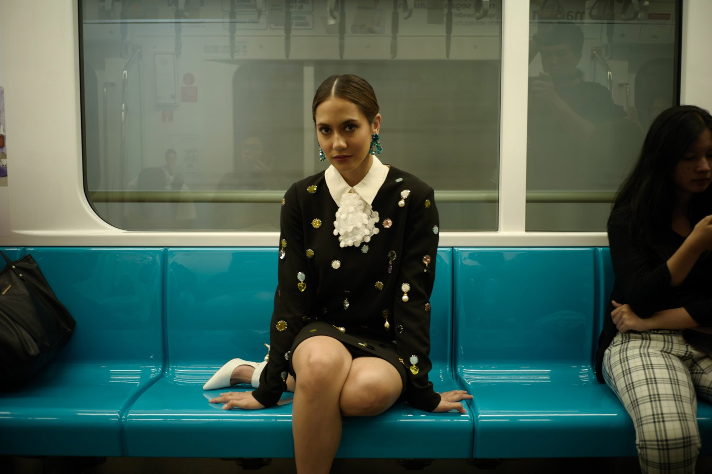

Vicky Tanzil
Dalam hitungan belasan bulan Pevita berhasil mengubah pribadinya secara fisik dan mental demi sebuah kebaikan. Semuanya ia ceritakan kepada Erica Arifianda, bersamaan dengan penampilan terbarunya untuk pemotretan perdana Cover Digital Bazaar.Co.Id
Saya menunggu Pevita di salah satu kamar di Shangri-La Hotel, Jakarta. Sudah ada Ryan Ogilvy yang sedang menyiapkan alat-alat untuk merias Pevita. Tak berapa lama, bel kamar berbunyi, Pevita datang. “Hai! Apa kabar? Sudah lama tidak bertemu. Wah, ada kamu dan Ryan, kita sedang reuni New York!” sapa Pevita. Ya, pertemuan saya dan Pevita bukan yang pertama. Kami sebelumnya pernah terlibat kerja sama untuk sebuah brand kecantikan ternama saat New York Fashion Week tahun 2016, kebetulan bersama Ryan juga.
Saya mengamati dirinya selama dirias, ada yang berubah dari Pev (begitu ia disapa)? Jelas ada, secara fisik tubuhnya yang mungil terlihat lebih firm dan toned. Pribadi? Sesaat masih ada Pev yang easy going dan senang diajak bercerita. Namun, ia tampak jauh lebih tenang, kalem. Berbeda dengan Pevita yang saya temui empat tahun lalu di New York, lantas apa yang membuatnya berubah?
Perbincangan kami pun dimulai, “Gimana? Kocak kan, saya empat tahun lalu memang lebih naif, saya merasa semua orang baik. Tapi seiring dengan karier berjalan, semua kekecewaan yang dialami, saya berhasil melewatkan perjalanan yang membuat saya step back dan mulai mencernanya satu per satu,” kata Pevita.
Ia melanjutkan cerita bagaimana dua tahun lalu merupakan titik terendah dalam hidupnya, “Kurang lebih selama satu tahun saya merasa kebingungan dengan segalanya. Saya merasa semua tidak memberikan hasil yang baik, bukan gagal. Dan ini lebih pada masalah personal, bukan pekerjaan. Hubungan dengan keadaan sekitar, keluarga, teman, dan romansa. Saya mulai menyalahkan hal lain, bukan orang. Dan saya juga tidak mau menyalahkan diri sendiri, selalu mencari alasan, hingga akhirnya saya sadar, saya lelah. Kenapa polanya seolah sama.”
Akhirnya, Pevita memilih untuk meditasi dan membatasi media sosial kecuali untuk urusan pekerjaan, “Dari situ saya mulai belajar, ketika saya merasa sedih, marah, bingung, saya harus mencernanya. Direnungkan, dipikirkan jalan keluarnya supaya tidak terjadi lagi. Harus berani berkata tidak untuk sebuah hal. It’s okay to cut some people in your life. Kamu harus mengontrol itu, jangan biarkan orang mengontrol kamu! Because you are the main character of your life!” ujarnya sambil tersenyum.
Bicara soal perubahan secara fisik, Pevita punya kisah panjang yang juga tidak kalah menarik. Tentu Anda sudah mendengar bahwa Pevita sedang terlibat sebuah project film di bawah rumah produksi Bumilangit Cinematic Universe, untuk memerankan salah satu karakter pahlawan super wanita bernama Sri Asih. Aktris berusia 27 tahun ini mencurahkan tenaga, waktu, dan pikiran untuk karakter Sri Asih selama tahun 2019 kemarin. “Namanya sebagai aktor, saat mendapat karakter yang bisa mengeksplorasi skill pasti akan merasa tertantang. Ketika saya dapat proyek Sri Asih, saya mau mendorong diri saya lebih dalam dan maksimal lagi dari proyek-proyek sebelumnya. Apalagi ini adalah film action, sesuatu yang saya ingin lakukan dari tahun-tahun sebelumnya,” kata Pevita tentang awal persiapannya untuk film Sri Asih.
“Khususnya pada fisik, saya dulu memang suka berolahraga namun intensitasnya tidak sama seperti sekarang. Saya rasa saya perlu mengejar target lebih lama, oleh karena itu saya izin kepada rumah produksi agar diberi persiapan panjang untuk memberi hasil maksimal, supaya juga dapat meraih segalanya. Ketika bicara tentang koreografi baik itu menari atau bertarung, kuncinya hanya satu, yakni disiplin. Kemudian dilakukan terus menerus, sehingga menjadi refleks. Nah, refleks itu terjadi karena kita terbiasa. Transformasi refleks itu yang sekarang sedang saya bangun,” lanjutnya.
”It’s okay to cut some people in your life. Because you are the main character of your life!”
Ketika ditanya transformasi mentalnya, Pevita menjawab, “Perubahan mental itu masih ada sampai sekarang, saya mencoba untuk tidak pernah cepat puas. Kalau di awal-awal saya menangkap adanya keraguan di mata orang-orang. Mereka seolah memberi komentar: ‘Mana bisa Pevita akting film aksi, paling dia manja. Mana mau Pevita begini begitu’. Tapi ya, kalau belum kenal secara personal, kan Anda tidak tahu saya bagaimana. Memang ada proses saat saya tidak percaya dengan diri sendiri, pertama kali saya training, tidak sampai 5 menit saya sudah muntah-muntah. Sempat terbersit di pikiran, sepertinya mereka terlihat kecewa pada saya. ‘Aduh, bagaimana gue bisa jadi Sri Asih’. Saya sempat menangis, saya tertekan, dan banyak berbicara dengan diri sendiri. Kadang dengar bad voice, good voice, tapi saya coba fokus demi tujuan utama, yakni menyukseskan karakter Sri Asih dari segala aspek. Saya banyak berdiskusi dengan tim, menyatakan keluh kesah dan tidak memendamnya, mereka banyak membantu saya, dari sutradara, produser, sampai tim koreo yaitu Tim Uwais.”
Dan hasil dari latihan intens Pevita bersama Tim Uwais tersebut sempat diuji untuk kampanye iklan sebuah uang elektronik, di sana Pev menunjukkan kelihaiannya dalam beraksi layaknya superhero. Pevita merasa beruntung mendapat tawaran membintangi campaign itu, sebab ia memiliki ketakutan akan proses yang akan ia jalani di lapangan untuk Sri Asih. “Saya berdiskusi dengan tim, kalau bisa melakukan adegan aksi sebelum pembuatan film Sri Asih akan lebih baik, agar saya dapat meraba-raba. Saya stres memikirkan beragam masalah di lapangan, nanti bagaimana dengan sesama fighter, bagaimana set di sana. Di film action, adegan patah meja dan lain-lain itu terbatas, hanya boleh dilakukan setidaknya tiga kali saja. Tekanan itu, memang harus saya hadapi, itulah film laga,” cerita Pevita.
Tapi siapa pun yang menyaksikan kampanye iklan itu terkagum melihat sosok Pevita yang ternyata dapat melakukan adegan pertarungan, termasuk saya.
“Hahaha (tertawa), campaign itu juga keren karena eksekutor tim di baliknya, director-nya Mas Timo, koreografi oleh Tim Uwais. Tapi, setelah mengobrol dengan Mbak Upi (Sutradara film Sri Asih), adegan saya nanti akan lebih brutal,” ungkap Pevita lagi.
Jadi transformasi di atas apakah membahagiakan seorang Pevita? “Awalnya saya menjalani proses ini demi perjalanan menuju Sri Asih. Tapi nyatanya saya sangat menikmati. Bisa dikatakan pencapaian saya di tahun 2019 kemarin adalah ‘how the journey becoming Sri Asih changes lot of perspective in my life’. Saya mendorong diri saya untuk disiplin! Saya berangkat latihan saja berat, karena lokasinya jauh dari rumah. Bangun lebih awal demi menghindari ganjil dan genap. Tapi hal itu justru lebih membangun saya, karena prosesnya, bukan hanya hasilnya. Dan ini akan menjadi sesuatu yang akan saya maintain as a person.”
Dalam menyiapkan cover digital ini, tim Bazaar dan Pevita meluangkan waktu selama dua hari untuk mengelilingi kota Jakarta. Ia terlihat antusias saat pertama kali menginjakkan kaki di M Bloc Space, pertama kalinya pula Pevita melihat Hutan Plataran Kota di GBK. “Saya bangga sekali dengan Jakarta! Beberapa tempat banyak side walk agar pedestrian dapat berjalan dengan nyaman. GBK juga semakin punya banyak tempat umum dan hiburan, yang berujung mendukung gaya hidup sehat. Masyarakat dapat jalan-jalan, jogging, punya tempat untuk berkumpul dengan udara segar yang bukan dari AC. Something different, semoga setiap area dapat memiliki taman sendiri, diikuti penambahan fasilitas publik yang bagus. Memang konsekuensi pembangunan itu ada, jalanan jadi lebih macet, akan tetapi itu kan demi mengubah kebiasaan kita agar jadi lebih baik,” harap Pevita tentang kota Jakarta.
Pernyataan Pev tadi bukan sekadar ucapan belaka, ia terlihat menikmati perjalanan kami menggunakan transportasi umum dan berjalan kaki di sepanjang trotoar jalan protokol selama pemotretan. Karakter santai itu masih sangat terasa, saya pun jadi ingin tahu, apakah ketakutan terbesar bagi seorang Pevita? Apakah kehilangan? Ia menjawab dengan lugas, “Tidak, saya tidak takut kehilangan. Saya percaya semua ada waktunya dalam kehidupan. Justru yang saya takuti adalah kosong. Kosong as a person, kosong dalam perspektif, kosong di sekitar kamu, atau stagnan cenderung malah menurun. Kosong itu menakutkan!”